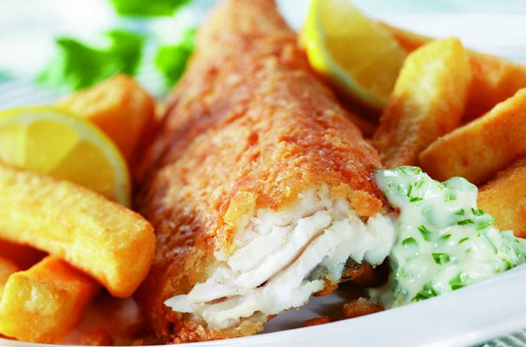

Fish & Chips
Besan-battered, crisp and golden

Method
- On a plate, add some salt, red chilli powder and coriander leaves and mix well. Dab the fish fillets one by one in this mixture on both sides.
- To make the coating, take a mixing bowl, add besan and corn flour and mix well. Dip the marinated fillet in this mixture to cover both sides.
- Deep fry until crisp and golden brown. Serve hot with your favourite sauce.